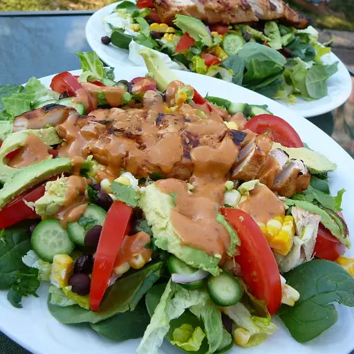

Amy's Barbecue Chicken Salad
Description
This recipe for barbecue chicken salad is very similar to one at a popular restaurant near my house. I loved it there and decided to make it at home. Now it's one of my favorite salads to make!
Ingredients
- 2 skinless, boneless chicken breast halves
- 1 head red leaf lettuce, rinsed and torn
- 1 head green leaf lettuce, rinsed and torn
- 1 fresh tomato, chopped
- 1 bunch cilantro, chopped
- 1 (15.25 ounce) can whole kernel corn, drained
- 1 (15 ounce) can black beans, drained
- 1 (2.8 ounce) can French fried onions
- ½ cup ranch dressing
- ½ cup barbecue sauce
Steps
- Preheat the grill for high heat and lightly oil the grate.
- Cook chicken on the preheated grill until the juices run clear, about 6 minutes per side. An instant-read thermometer inserted into the center should read at least 165 degrees F (74 degrees C). Remove from heat, cool, and slice.
- In a large bowl, mix lettuces, tomato, cilantro, corn, and black beans. Top with grilled chicken slices and French fried onions.
- In a small bowl, mix ranch dressing and barbecue sauce together. Serve on the side as a dipping sauce or toss with the salad to coat.